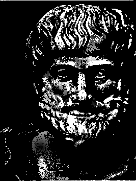
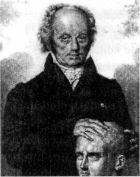
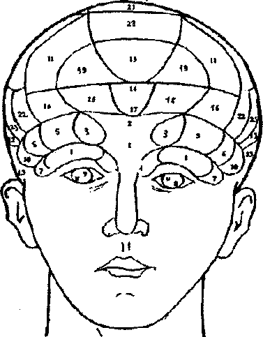
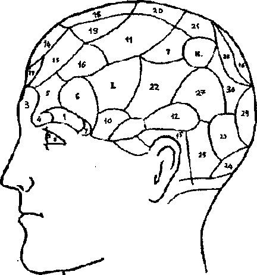

• • • • • • • • • • • • • • • • • • • • • • • • • • • • • • • • • • • • • • • • • • • • • • • • • • • • • • • • • • •
© www.MaximumBilgi.com
• • • • • • • • • • • • • • • • • • • • • • • • • • • • • • • • • • • • • • • • • • • • • • • • • • • • • • • • • • •
Araştırma Serisi No.13
¯¯¯¯¯¯¯¯¯¯¯¯¯¯¯¯¯¯¯¯¯¯¯¯¯¯¯¯¯¯¯¯¯¯¯¯¯¯¯¯¯¯¯¯
Yüz Okuma Sanatı
¯¯¯¯¯¯¯¯¯¯¯¯¯¯¯¯¯¯¯¯¯¯¯¯¯¯¯¯¯¯¯¯¯¯¯¯¯¯¯¯¯¯¯¯
• • • • • • • • • • • • • • • • • • • • • • • • • • • • • • • • • • • • • • • • • • • • • • • • • • • • • • • • • • •
DOSYA İÇERİĞİ
• • • • • • • • • • • • • • • • • • • • • • • • • • • • • • • • • • • • • • • • • • • • • • • • • • • • • • • • • • •
¾ Yüz Yapısı ve İnsan Karakteri İlişkisi
(Tarihten Günümüze Gelişim Süreci)
¾ Erzurumlu İbrahim Hakkı'nın "Marifetname"si ¾ Yüz Yapısı - İnsan Karakteri İlişkisinin Günümüzdeki Uygulamaları ¾ Kolay Fizyognomi Notları
¾ Yüz Çizgileri İçin Değişik Bir Sistem
¾ Yüz Yapısı
¾ Yüz Yapısı ve Görsel Hafıza
¾ Ağız Yapısı (Ağzın Bilgi İşaretleri)
¾ Yüz Yapısına Göre Teşhis
¾ Resimlerle Yüz Yapısı Örnekleri
• • • • • • • • • • • • • • • • • • • • • • • • • • • • • • • • • • • • • • • • • • • • • • • • • • • • • • • • • • •
Araştırma Serisi No.13 Yüz Okuma Sanatı
¯¯¯¯¯¯¯¯¯¯¯¯¯¯¯¯¯¯¯¯¯¯¯¯¯¯¯¯¯¯¯¯¯¯ ¯¯¯¯¯¯¯¯¯¯¯¯¯¯¯¯¯¯¯¯¯¯¯¯¯¯¯¯¯¯¯¯¯¯
1
1. BÖLÜM
YÜZ YAPISI & İNSAN KARAKTERİ İLİŞKİSİ
(TARİHTEN GÜNÜMÜZE GELİŞİM SÜRECİ)
1. FİZYOGNOMİNİN MEYDANA ÇIKMASI VE GELİŞİMİ
1.1. Kavram
"Fizyognomi" terimi, Yunanca physis -doğa ve gnomon- yorum kelimelerinin birleşimidir. Giovanni Battista Della Por-ta (1535-1615)'ya göre gnomon, aynı zamanda yasa, kural anlamına gelmektedir; yani, fizyognomi "doğa yasası"
demektir. Della Porta'ya göre, doğanın belli kurallarına uyarak "belli vücut biçimlerine göre belli ruh hallerini" öğrenebiliriz.
Çok eski dönemlerden başlayarak, bilginler insanın yüz yapısı ile karakteri arasında bir ilişki kurmağa çalışmışlardı. Bu yöntemin temelinde insanın beden yapısı ve psikolojisi arasında doğal bir bağlantının olduğu inancı yatmaktaydı.
Bilimsel temelden yoksun olmasına rağmen fizyognomi, karakter özelliklerinin tipolojisi için önayak olmuştur.
1.2. Gelişimi
Fizyognomi, sistemli bir şekilde ilk kez Çin'de gelişmiştir. Çinliler, insanların yüz biçimlerine göre insanların karakter özelliklerini okuma yöntemini kullanmış, ayrıca başarı düzeylerini belirleme yöntemini kullanmışlardı. Sonraki dönemlerde değişik uygarlık merkezlerinde fizyognomiye ilişkin bilgiler sistemleştirilip geliştirilirken, belli özelliklere sahip değişik ekoller ve sistemler ortaya çıkmıştır.
Eski Çin yüz okuma uzmanlarına göre, yüzü oluşturan unsurlardan beşi çok önemlidir. Bunlar kaşlar, gözler, ağız, burun ve kulaklardır. Eski metinlerde onlar beş önemli organ olarak geçmektedir. Bu organlardan birisinin bile dengeli bir biçimde olması en az 10 yıl mutlu yaşam demektir. Tüm organların aynı şekilde dengeli biçimde olması bu mutluluğu orantılı şekilde arttırıyor. Bu organların incelenmesinden sonra sırada alın, elmacık kemikleri, şakaklar, çene ve kırışıklar gelmekte, en sonunda ise derinin rengi, ayrıca, gözlerin parlaklığı, biçimi, göz küresi ve göz kapaklan inceleniyor.
Çin fizyognomi uzmanlarına göre, onların sistemi insanların uzun ömürlü olmaları konusundaki gerçekleri bulacaktır. Çin sistemine göre, insan yüzünde belli konumlar ve çizgiler mevcuttur. Bunların her biri belli bir yaşı __________________________________________________________________
© WWW.MAXIMUMBILGI.COM

Araştırma Serisi No.13 Yüz Okuma Sanatı
¯¯¯¯¯¯¯¯¯¯¯¯¯¯¯¯¯¯¯¯¯¯¯¯¯¯¯¯¯¯¯¯¯¯ ¯¯¯¯¯¯¯¯¯¯¯¯¯¯¯¯¯¯¯¯¯¯¯¯¯¯¯¯¯¯¯¯¯¯
2
belirlemektedir. Onlar, bir dizi "uzun ömürlülük belirtileri"ni de tespit etmişler.
Çinlilerin fizyognomi sistemi bugün de incelenmekte ve geliştirilmektedir.
1.2. Aristo'nun Fizyognomiye İlişkin Görüşleri
Fizyognomi ile ilgili bilgilere Hipokrat, Aristo ve Pluto gibi eski Yunan düşünürlerinin eserlerinde
rastlanmıştır. Aristo, fizyognomiyi kişilerin ruh halini öğrenmek için kullanırken, Hipokrat bu usulle hastalara teşhis koymuştur. Onun ölmüş insanın yüz şeklini tasvir edişi bugün de doktorlar tarafından "Hipokrat maskesi"
olarak kullanılmaktadır.
Aristo'nun "De Natura Animalium" (1. Kitap) isimli çalışmasında beden ve yüz yapısı ile insanın karakter
özellikleri arasında bağlantı kurulmaktadır.
Aristo'ya göre, insanın beden ve yüz yapısının belli bir hayvana benzemesi, onun karakter özelliklerini ortaya koymaktadır. Aristo insanın yüz yapısı, gözleri, alnı, kafa yapısı, derisinin rengi, saçının rengi, gözünün rengi, bedenin tüy örtüsü, sesinin tonu, yürüyüşü, beden hareketleri, bakışları, boyu ile ilgili karakter özelliklerini hayvanlardaki benzer özelliklerle kıyaslamaktadır.
Aristo'ya göre, belli özelliğe sahip insanlar, benzeri oldukları hayvanların karakter özelliklerini taşımaktadırlar. Yüz yapısı ve insan karakteri arasındaki ilişki, Aristo'nun eserinde aşağıdaki şekilde geçmektedir .
Dudaklar
Dudakları ince ve ağız kenarları, dudaklar ileri uzandığında üst dudağın alttakinin üzerine çıkacak şekilde gevşek olan insanlar alçakgönüllüdürler. Bu aslan tipine uygun gelmektedir. Aynı şeyi büyük ve küçük köpeklerde de görebiliriz. Dudakları ince, sert ve köpek dişleri hizasında yukarıya doğru çekilmiş olan insanlar aşağı ve bayağıdırlar. Bu domuz tipine uygun gelmektedir.
Dudakları kalın ve üst dudak alttakinin üzerine çıkan insanlar aptaldırlar. Bu eşek ve maymun tipine uygun gelmektedir. Üst dudağı ve üst damağı öne doğru çıkan insanlar huysuz ve kavgacıdırlar. Bu, köpek tipine uygundur.
Burun
Burun deliklerinin duvarları kalın olan insanlar iyi kalplidirler. Bu öküz tipine uygun gelmektedir. Burun deliklerinin duvarları ince olan insanlar hırçın bir yapıya ve karaktere sahiptiler; bu köpek tipine uygun gelmektedir. Burun delikleri dairevi olan insanlar alçak gönüllüdürler. Bu durum aslanlarla benzerlik oluşturmaktadır.
__________________________________________________________________
© WWW.MAXIMUMBILGI.COM
Araştırma Serisi No.13 Yüz Okuma Sanatı
¯¯¯¯¯¯¯¯¯¯¯¯¯¯¯¯¯¯¯¯¯¯¯¯¯¯¯¯¯¯¯¯¯¯ ¯¯¯¯¯¯¯¯¯¯¯¯¯¯¯¯¯¯¯¯¯¯¯¯¯¯¯¯¯¯¯¯¯¯
3
Burnu ensiz olan insanlar (sivri burunlular) kuşlara benzemektedirler.
Burnunun ucu enli olan insanlar aptaldırlar. Bu domuzlara uygun gelmektedir.
Direk alından başlayan gaga burunlu insanlar arsızdırlar; bu, karga tipine uygun gelmektedir. Alından keskin bir şekilde ayrılan gaga burunlu insanlar alçak gönüllüdürler. Bu kartal tipine uygun gelmektedir.
Burnun alınla birleştiği yerde çökük, burun kavisi yukarıya doğru eğilmiş olan insanlar şehvetli ve ihtiraslıdırlar. Bu horoz tipine uygun gelmektedir. Düz ve kalkık burunlu insanlar şehvetli ve ihtiraslıdırlar; bu geyik tipine uygun gelmektedir. Burun delikleri geniş olan insanlar sinirlidirler. Bilindiği gibi bu durum sinirlilik halinde ortaya çıkmaktadır.
Yüz Yapısı
Yüzü enli ve etli olan insanlar iyi kalplidirler; bu öküz tipine uygun gelmektedir.
Kemikli yüze sahip olan insanlar tedbirli, etli olan insanlar ise korkaktırlar.
Bunlar sırasıyla eşek ve geyik tiplerine uygun gelmektedir.
Küçük yüzlü insanlar cesaretsiz ve iradesizdirler; bu kedi ve maymun tipine uygun gelmektedir. Büyük yüzlü insanlar tembeldirler; bu eşek ve öküz tipine uygun gelmektedir. Dolayısıyla, yüz ne büyük, ne de küçük olmalıdır. En iyisi orta büyüklükte olmasıdır. Yüzü aşırı küçük olan insanlar aşağı ve bayağıdırlar.
Asık suratlı insanlar somurtkan karakterlidirler. Allıkla boyanmış gibi yüze sahip olan insanlar utangaçtırlar. Bilindiği gibi bu durum insan bir şeyden utandığı zaman ortaya çıkmaktadır. Yanakları allanan insanlar alkoliktirler.
Bilindiği gibi insan alkol aldığı zaman yanakları allanıyor.
Gözler
Gözlerinin altı torbalaşmış insanlar alkoliktirler. Yüzünün bu bölgesi şişkin olan insanlar ise yatmayı çok sevenlerdir. Nitekim, uykudan yeni kalkmış insanın gözünün çemberinde şişkinlikler bulunur. Küçük gözlü insanlar cesaretsiz ve iradesizdirler; bu maymun tipine uygun gelmektedir. Büyük gözlü insanlar tembeldirler; bu öküz tipine uygun gelmektedir. Gözleri ne aşırı büyük, ne de aşırı küçük olarak doğmuş birisi asil bir karaktere sahip olacaktır.
Çukur gözlü insanlar gaddardırlar; bu maymun tipine uygun gelmektedir. Patlak gözlü insanlar aptaldırlar; bu eşek tipine uygun gelmektedir. Dolayısıyla, gözler ne aşırı patlak, ne de aşırı çukur olmalıdır; en iyisi orta büyüklükte olmasıdır.
Gözü hafiften çökük olan insanlar alçak gönüllüdürler. Bu aslan tipine uygun gelmektedir. Eğer aşırı çökük ise sakin ve usludurlar. Büyük öküz tipine uygun gelmektedir. Buğulu gözlü insanlar hüzünlüdürler. Bilindiği gibi insan hüzünlenince gözleri buğulanır.
__________________________________________________________________
© WWW.MAXIMUMBILGI.COM
Araştırma Serisi No.13 Yüz Okuma Sanatı
¯¯¯¯¯¯¯¯¯¯¯¯¯¯¯¯¯¯¯¯¯¯¯¯¯¯¯¯¯¯¯¯¯¯ ¯¯¯¯¯¯¯¯¯¯¯¯¯¯¯¯¯¯¯¯¯¯¯¯¯¯¯¯¯¯¯¯¯¯
4
Alın
Alnı küçük olan insanlar aptaldırlar. Bu domuz tipine uygun gelmektedir. Alnı aşırı büyük olan insanlar ağır kanlıdırlar. Bu öküz tipine uygun gelmektedir.
Alnı daire şeklinde olanlar aptaldırlar. Bu eşek tipine uygun gelmektedir. Alın yüzeyi büyük olan insanlar hassas, basiretli ve anlayışlıdırlar; bu köpek tipine uygun gelmektedir. Alnı düzgün kare eklinde olan insanlar alçak gönüllüdürler; bu aslan tipine uygun gelmektedir. Alnı kırışık olan insanlar mağrurdurlar; bu boğa ve aslan tipine uygun gelmektedir. Alnında kırışıklar olmayan insanlar yalakadırlar. Dolayısıyla, alnın düz kırışıklı durumu kibirlilik, kırışıksız durumu ise yalakalığı ifade ettiği için, en iyisi orta durum olacaktır.
Baş
Başı büyük olan insanlar hassastırlar. Bu köpek tipine uygun gelmektedir. Başı küçük olan insanlar duygusuzdurlar; bu domuz tipine uygun gelmektedir. Kafası, yukarıya doğru en-sizleşen insanlar (yumurta kafalı) arsız ve yüzsüzdürler; bu eğri tırnaklı kuş tipine uygun gelmektedir. Kulağı küçük olanlar maymuna, büyük olanlar ise eşeğe benzemektedirler. Köpeklerde ise kulaklar daha orantılıdır.
Derinin Rengi
Aşırı esmer olanlar korkaktırlar; bu Mısırlı ve Habeş tipine uygun gelmektedir.
Aynı şekilde beyaz yüzlü insanlar da korkaktırlar. Bu kadın tipine uygun gelmektedir. Dolayısıyla, mertliği ve cesurluğu ifade eden renk orta kıvamda olmalıdır.
Saçın Rengi
Sarışın saçlı insanlar cesurdurlar; bu aslan tipine uygun gelmektedir. Saçları aşırı kızılı olan insanlar kurnazdırlar; bu tilki tipine uygun gelmektedir. Yüz rengi solgun ve değişik tonda olan insanlar korkaktırlar. Bu korku anında ortaya çıkan duruma uygun gelmektedir. Bal sarısı renginde olan insanlar soğukturlar.
Soğuk olan insanlar ise yavaş hareketlidirler.
Vücut hareketleri yavaş olan insanlar ise ağır kanlıdırlar. Kırmızı renkliler çabukturlar. Zira, hareketten ısınan vücut kızarıyor. Ateş kırmızısı renginde olanlar çılgınlığa meyillidirler. Şöyle ki, bir cismin aşın ısınmış parçaları alev rengini alıyor. Aşırı hırçın insanlar ise deliliğe yatkındırlar. Göğsünde renk beliren insanlar sinirlidir. Bilindiği gibi insan sinirlenince göğüs bölgesinde bir yangı oluşuyor.
__________________________________________________________________
© WWW.MAXIMUMBILGI.COM
Araştırma Serisi No.13 Yüz Okuma Sanatı
¯¯¯¯¯¯¯¯¯¯¯¯¯¯¯¯¯¯¯¯¯¯¯¯¯¯¯¯¯¯¯¯¯¯ ¯¯¯¯¯¯¯¯¯¯¯¯¯¯¯¯¯¯¯¯¯¯¯¯¯¯¯¯¯¯¯¯¯¯
5
Gözlerin Rengi
Gözleri kızaran insanlar çabuk sinirlenirler. Göz rengi siyah olan insanlar korkaktırlar. Bellidir ki, siyah renk korkaklığı sembolize eder. Gözleri tam siyah değil de, kestane rengine yakın olan insanlar dengeli bir karaktere sahiptirler.
Parlak mavi renkli veya beyazımsı renkli gözleri olan insanlar korkaktırlar.
Bellidir ki, beyazımsı renk korkaklığı sembolize eder. Gözleri mavi değil de, kestane renginde olanlar cesurdurlar. Bu aslan veya kartal rengine uygun gelmektedir.
Gözleri koyu kestane renkli olan insanlar şehvetlidirler. Bunlar keçilere benzetilebilir. Gözleri alev renginde olanlar arsız ve yüzsüzdürler. Bunlar köpeklere benzetilebilir.
Parlak, fakat belirgin bir rengi olmayan göze sahip insanlar korkaktırlar. Gözleri parlak olan insanlar ihtiraslıdırlar. Bunlar horozlara ve kargalara benzetilebilir.
Tüy Örtüsü
Bacakları kıllı olan insanlar şehvetlidirler. Bu keçi tipine uygun gelir.
Göğsü ve karın bölgesi aşırı kıllı olan insanlar başladıkları işi hiçbir zaman bitirmezler. Bu kuş tipine uygun gelmektedir. Göğsü tamamen tüysüz olan insanlar arsız ve yüzsüzdürler.Bu kadın tipine uygun gelmektedir. Bu yüzden ne fazla kıllı, ne de fazla kılsız olması gerekir.
Omuzları kıllı olan insanlar da başladıkları işi bitirmezler. Bu kuş tipine uygun gelmektedir. Boynunun arka tarafı tüylü olan insanlar asildirler. Bu aslan tipine uygun gelmektedir.
Sakalı seyrek olan insanlar dengeli karaktere sahiptirler. Bu köpek tipine uygun gelmektedir.
Kaşları kalın olan insanlar somurtkandırlar. Kaşları, burun tarafta aşağıya doğru sarkan ve şakaklara doğru yukarı kalkan insanlar saftırlar. Bu domuz tipine uygun gelmektedir.
Baştaki Tüyler
Saçları düz olan insanlar korkaktırlar. Kıvırcık saçlı insanlar da korkaktırlar. Bu Habeş tipine uygun gelmektedir. Dolayısıyla, gerek düz, gerekse kıvırcık saçlar korkaklığı sembolize ettiği için az dalgalı saçlar yüksek manevi değerleri ifade etmektedir. Bu aslan tipine uygun gelmektedir.
__________________________________________________________________
© WWW.MAXIMUMBILGI.COM
Araştırma Serisi No.13 Yüz Okuma Sanatı
¯¯¯¯¯¯¯¯¯¯¯¯¯¯¯¯¯¯¯¯¯¯¯¯¯¯¯¯¯¯¯¯¯¯ ¯¯¯¯¯¯¯¯¯¯¯¯¯¯¯¯¯¯¯¯¯¯¯¯¯¯¯¯¯¯¯¯¯¯
6
Alın üzerinde yukarıya ve arkaya doğru yönelen saçlara sahip kişiler asildirler.
Bu aslan tipine uygun gelmektedir. Burun hizasında alının ortasına doğru saçları olan insanlar aşağı ve bayağıdırlar. Nitekim bu durum kölelere özgüdür.
Ses
Ses tonu aşağı olan insanlar küstahtırlar. Bu eşek tipine uygun gelmektedir.
Alçak tondan başlayıp yüksek tonla bitiren insanlar tatmin olmayan ve şikayetçi insanlardır. Bu öküz tipine uygun gelmektedir. Yüksek, alçak ve kırılan bir sesle konuşanlar sapıktırlar. Bu kadın tipine uygun gelmektedir. Yüksek ve düzgün bir sesle konuşanlar köpeklere benzetilebilir. Zayıf, gevşek bir sesle konuşanlar sakindirler. Bunlar koyun tipine uygun gelmektedirler. Yüksek sesle konuşan ve bağıran insanlar şehvetlidirler. Bunlar keçilere benzemektedir.
NOT: Bunların dışında Aristo, insanın ayakları, vücut yapısı, omuzlar ve boynu, boyu, beden yapısı, bakışları ve göz mimikleri, yürüyüşü ve karakter özellikleri konusunda da belli görüşler ortaya koymaktadır.
Aristo, daha sonra devamcıları Polemon (M.Ö. II yy.) ve At-hamanti (M.Ö. IV yy.) fizyognomi yöntemiyle kendi dönemlerinde yaşamış bir çok şahısın karakter özelliklerine ilişkin yazılar yazmışlardır. Aristo'nun yöntemi uzun müddet kendinden sonraki bilginler için bir kaynak olmuştur.
15. ve 16. yüzyıllardan itibaren fizyognomi kişilerin karakter özelliklerinin belirlenmesinde sıkı bir şekilde kullanılmıştır. Fizyognomi; doktorlar, din görevlileri, filozof ve hakimlerin başvurdukları bir yöntem olmuş ve büyük toplumsal ilgi görmüştür.
17 yüzyılda engizisyon mahkemeleri yüz ve beden yapısına göre "gerçekliği"
tespit ediyorlardı. Buna göre de, fizyognomi; kehanet, falcılık, astroloji vs. ile sıkı bir şekilde kullanılıyordu. Fizyognomi alanında Avrupa'da bu konudaki önemli gelişme Johann Caspar Lavater'in çalışmaları sonucu gerçekleşmiştir. Lavater'in ve ondan sonra Franz Jozef Gall'ın söz konusu incelemeleri Avrupa'da bu konu üzerine büyük tartışmalara yol açmıştır.
1.3. Johann Caspar Lavater (1741-1801)
Fizyognomi alanındaki önemli gelişmenin temeli 15 Ekim 1741'de Zürih'te doğmuş İsviçreli ilahiyatçı, fizyognomist ve yazar Johann Caspar Lavater (1741-1801) tarafından atılmıştır.
Lavater 1769'dan yaşamının sonuna dek din görevlisi olarak çalışmıştır. 1775
yılında Leypsig'de "İnsan Doğasının Tanımlanmasına Yardımcı Olacak Fizyognomik Fragmanlar" (Physiognomische Fragmente zur Beförderung der Menschen-kenntnis und Menschenliebe, 1775-1778) eseri o dönemde eşsiz bir yankı uyandırmıştır. Johann Caspar Lavater'e göre yüzün her bir öğesi; göz, alın, __________________________________________________________________
© WWW.MAXIMUMBILGI.COM

Araştırma Serisi No.13 Yüz Okuma Sanatı
¯¯¯¯¯¯¯¯¯¯¯¯¯¯¯¯¯¯¯¯¯¯¯¯¯¯¯¯¯¯¯¯¯¯ ¯¯¯¯¯¯¯¯¯¯¯¯¯¯¯¯¯¯¯¯¯¯¯¯¯¯¯¯¯¯¯¯¯¯
7
burun, kulak, ağız, çene vs. ayrı ayrı ve birbirine olan ilişkileri içinde psikolojik anlam taşır, kişilik özelliklerini gösterir. Lavater'in bu çalışmasının bilimselliği üzerinde tartışmalar olmuşsa da, söz konusu eser konuyu daha da popüler kılmıştır.
Lavater, Zürih'in Fransızlar tarafından alınması zamanı yaralanmış, 2 Ocak 1801 yılında ölmüştür.
2. FRENOLOJİ
2.1. Franz Jozef Gali (1758-1828)
Fizyognomiye yakın bir alan olan Frenoloji de karakter
özelliklerinin tespiti konusunda değişik bir yöntem
uygulamıştır.
"Frenoloji" terimi, Yunanca phrenos -karakter, ahlak ve lygos- kuram kelimelerinin birleşimidir. Frenolojinin
gelişimi, Avusturyalı bir hekim ve nöroanatomist olan
Franz Jozef Gall'ın çalışmalarıyla sağlanmıştır.
Gali, 9 Mart 1758 yılında Tiefenbronn'da (Almanya) doğ-
muştur. Gali, okul yıllarından itibaren arkadaşlarının yüz yapısı ile kişisel yetenekleri arasında bağlantı kurmaya çalışmış, örneğin, iri gözleri olan öğrenci arkadaşlarının iyi sözel hafızaya sahip olduklarım tespit etmiştir. Gall'a göre, bu hafıza türü kafanın, göz bölgesinin arkasında yerleşen kısmıyla ilintilidir.
Gali, eşya, yer, isim, sayı, söz ve gramer hafıza türlerini ayırarak onları kafanın belli yerlerine "koymuş", ayrıca cesurluk, dürüstlük, iletişimsellik gibi yeteneklerin, ebeveynlere karşı olan sevgi hissinin, nesil devam ettirme güdüsünün de alanlarını belirlemiştir. Bu tezlerini sistemleştirerek Gali ve talebeleri insanın ahlaki ve entelektüel niteliklerinin bulunduğu yerleri belirterek ayrıntılı bir kafatası haritası çıkarmışlardır.
Gall'ın kuramına göre, kişilik ve akıl, kafasında yerini bulan bölüm ve çizgilerin sınırlarını çizer. Bu bölümler beynin yüzeyinde, yani dış çeperinde yayılmıştır.
Bu bölümlerden hangisi daha gelişmiş ve yayılmışsa, o bölümün karşıtı olan yetenek o derecede gelişmiştir.
Beyindeki bu gelişmeleri kafatasından izlemek mümkündür. Bu anlamda kafatası, insan aklının boyutlarını, yetenek ve becerilerinin sınırlarını gösteren bir haritadır. Böylece, Gall'ın öncülüğünde frenoloji (phrenology) oluşarak bilim tarihine girmiştir, ilginçtir ki Gali, bu terimi kabul etmemiştir. Nitekim, bu konuda şöyle söylemektedir: "Beni yeni bilim olan frenolojinin babası olarak adlandırıyorlar. Fakat bu böyle değildir. 'Frenoloji' kelimesi benim talebem Spurzheim tarafından ortaya atılmıştır. Ben ise bu terime karşıyım ve
'kefalolskopya', 'kranioskopya', 'kranioloji' terimlerini kullanıyorum". Az zaman __________________________________________________________________
© WWW.MAXIMUMBILGI.COM
Araştırma Serisi No.13 Yüz Okuma Sanatı
¯¯¯¯¯¯¯¯¯¯¯¯¯¯¯¯¯¯¯¯¯¯¯¯¯¯¯¯¯¯¯¯¯¯ ¯¯¯¯¯¯¯¯¯¯¯¯¯¯¯¯¯¯¯¯¯¯¯¯¯¯¯¯¯¯¯¯¯¯
8
içinde Gall'ın kuramına gösterilen ilgi ülke sınırlarını da aşmıştır. Fakat, Gall'ın kuramı daha ilk adımda politika ve din çevrelerinden sert tepkiler almış, hükümet Gall'ın kuramını zararlı bularak bu konudaki görüşlerini yaymasını ve tebliğ sunmasını yasaklamıştır.
Bundan dolayı Gali, Jean Gaspard Spurzheim ile birlikte Berlin'e gelerek faaliyetini burada devam ettirmeye başlamış ve bu faaliyeti Berlin'de bilimsel çevreler tarafından büyük ilgi ile karşılanmıştır. Gali, Almanya'nın nerdeyse tüm kentlerini gezip dolaşmış, her yerde tebliğler sunmuş ve konuşmalar yapmıştır.
Az bir zaman içinde Gali, çevresine çok sayıda taraftar toplayabilmiştir. Fakat, o Almanya'da fazla kalamamış ve Jean Gaspard Spurzheim ile birlikte Paris'e gitmeye karar vermiştir. Fransa'da büyük saygınlık gören Gali, yaşamının sonuna dek (1828) burada kalarak 5 ciltlik temel eserini tamamlamıştır. Gali 10
yıl içinde tamamladığı çalışmasında frenoloji alanındaki bilgileri bir araya getirerek sistemleştirmiştir: Genel Olarak Sinir Sisteminin ve Özellikle Beynin Anatomisi ve Fizyolojisi (Anatomie et physiologie du systeme nerveux en general et du cerveau en particulier, 1810-1820).
Spurzheim ise 1814 yılında Fransa'dan İngiltere’ye, göçmüş, 1832 yılında ise Amerika'ya gelerek çalışmalarını bu ülkede sürdürmüş, Harvard ve Boston üniversitelerinde profesörlük yapmıştır.
Frenoloji, o dönemde İngiltere ve Fransa'da gelişme ortamı bulmuştur. Bu ülkelerde süreli yayınları olan çok sayıda frenoloji dernekleri kurularak gelişmeye başlamıştır. Gall'ın araştırmaları Rusya'da da ilgiyle karşılanmıştır.
Ştaps-lekar P. Puzino Avrupa'ya seferleri zamanı 1813-1814 yıllarında Paris'te Gall'ı dinlemiş, daha sonra eserini Rusça'ya çevirmiştir. 1816 yılında St.
Petersburg'da Gali ve Spurzheim'm yeni sistemi konusunda kitap basılmış, fakat eserin materyalist ruhu birçok çevreler tarafından iyi karşılanmamıştır.
1824 yılında D.M. Vellanskiy "Gall'ın Kranioskopisi" adı altında açık dersler vermek istemişse de, bu kuram "Hıristiyan dinine karşı" olduğu için izin verilmemiştir
Gali 22 Ağustos 1828 yılında Paris'te ölmüştür. Eserleri:
- "Philos. mediz. Untersuchungen ueber Natur und Kunst im kranken und gesunden Zustande deş Menschen" (1792);
- "Anatomie et physiologie du systeme nerveux en general et du cerveau en particulier, ete." (1810 -1820);
- "Introduction au cours de physiologie du cerveau" (1808)
- "Sur les fonctions du cerveau" (1822);
__________________________________________________________________
© WWW.MAXIMUMBILGI.COM


Araştırma Serisi No.13 Yüz Okuma Sanatı
¯¯¯¯¯¯¯¯¯¯¯¯¯¯¯¯¯¯¯¯¯¯¯¯¯¯¯¯¯¯¯¯¯¯ ¯¯¯¯¯¯¯¯¯¯¯¯¯¯¯¯¯¯¯¯¯¯¯¯¯¯¯¯¯¯¯¯¯¯
9
2.2. Franz Josef Gall'ın Kafatası Haritası
F.J. Gali 1805 yılında yayınladığı "Yeni Anatomik ve Fizyolojik Sistem" adlı eserinde kafatası haritasını çizmiştir. 1. ve 2. şekillerde kafatasının önden ve yandan görünümü verilmiştir.
Gall'a göre 2,3,9,15-21 rakamlarıyla işaretlenmiş yetenekler sadece insana aittir.
Diğer yetenekler insanların yanı sıra hayvanlara da aittir.
3. ve 4. şekillerde kafatası iki taraftan görüntülenmiştir: önden ve yandan...
◄ Şekil 1. Alın kısmı